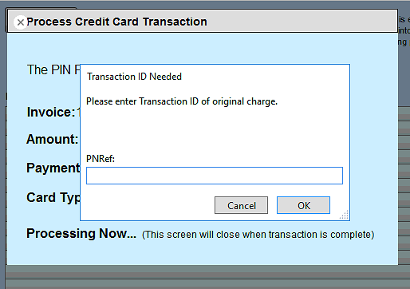
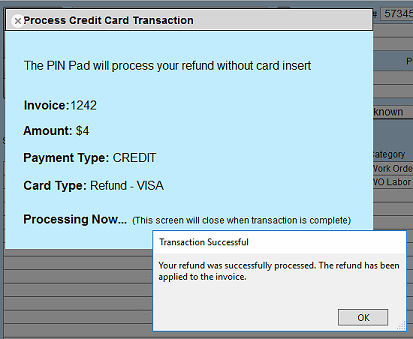
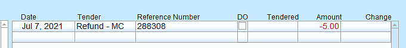

FrameReady Pay
FrameReady’s Credit Card processing integration with Payment Logistics also supports Refunds.
-
For use with the Fortis Integration
-
See also: Void a Credit Card Payment
Process a Credit Card Refund
About Credit Card Refund Transactions
-
A Refund is used when the transaction is no longer in the current batch.
-
The Refund processes a new transaction in FrameReady with a negative amount (-) which balances out the original transaction being refunded.
-
You can see the new transaction ID, and the original transaction ID, of the refunded transaction in the Reference Number field once the refund has been processed.
How to Process a Credit Card Refund Transaction
This can be done within a 24 hour windows of the payment being processed.
-
Locate the transaction that you would like to refund: do this by going to the invoice in question and click the Data Entry button.

-
In the Payments portal, locate the payment you intend to refund.
Copy down the Reference Number, e.g. 28613.

-
Click the New Invoice button.
-
Enter the Product or Work Order of the returned item in the Item Number field.
-
Enter a negative value in the Qty field, e.g. -1, -2, -3, etc.
If the record for this item is still in the Product file, it is put back into inventory. -
Enter Customer Information and you should have your negative balance invoice now.
-
When you have an invoice for a negative amount created, click the Data Entry button.
-
Click the Enter a Payment button.
-
In the Tender field, choose the option of "Refund - your card type" from the dropdown list.
There are multiple 'Refund' options; select the option that matches the card type from your original transaction.

-
After you have selected the correct refund tender, click the Process CC Transaction button (right hand side of the payment screen).
-
The Credit Card processing window (which activates the PIN pad listener) opens.
While processing the refund, the PIN pad will not go to a scan card screen, but will stay on the Fortis home page.
You do not need to insert the original card for the transaction into the PIN pad to process Voids or Refunds. -
After the PIN pad has initialized and the process begins running, it will ask you for the transaction ID of the original transaction.
Enter the Reference Number you copied earlier and click the OK button to continue.

-
When the refund has been processed by Payment Logistics, a pop up message appears: ‘Your refund has been successfully processed. The refund has been applied to the invoice.’

-
Click the OK button. The refund transaction appears in the Payments section as a negative dollar value.
-
Click Done to return to the invoice screen. Use the printer icon or receipt icon to print a paper copy showing the voided transaction.
You will see in the Reference Number field the new transaction number for the refund. You will be returned to the invoice screen and you should see the refunded payment in the payments portal.

© 2023 Adatasol, Inc.